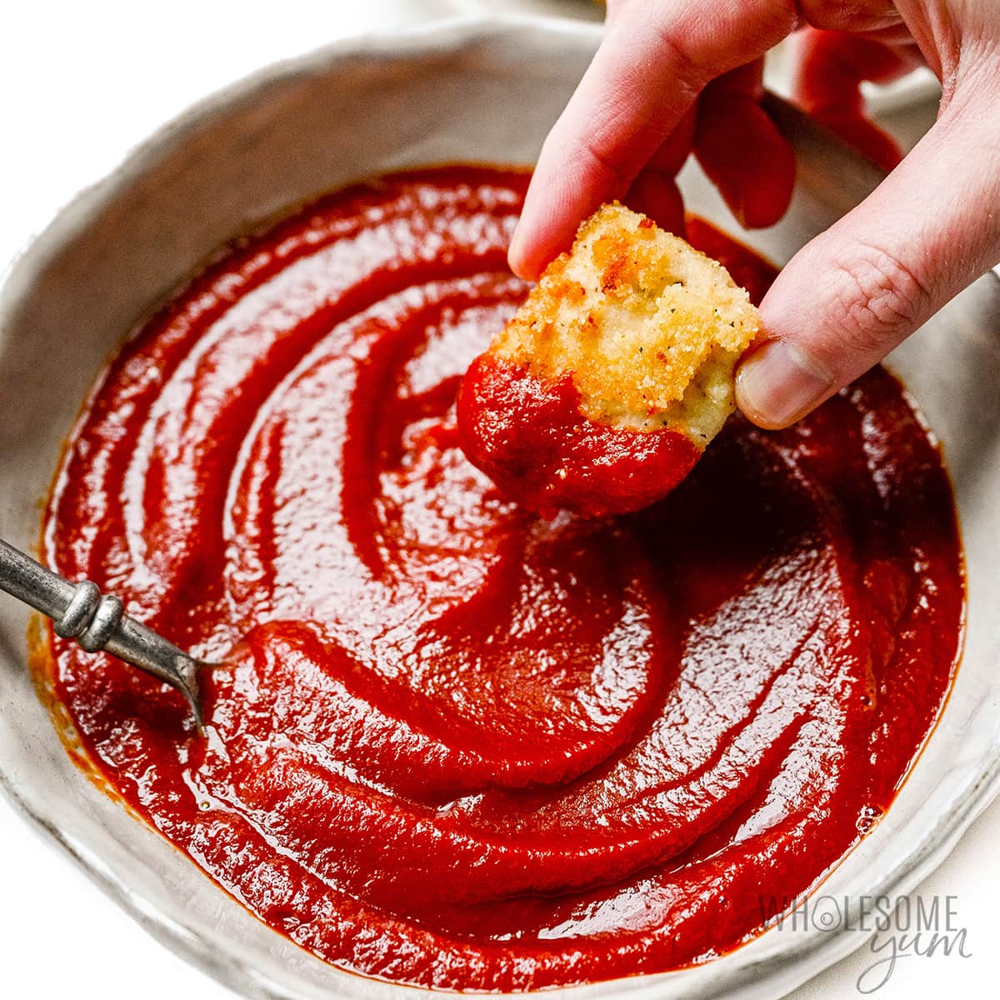

Ketchup

Ketchup or catsup is a table condiment with a sweet and sour flavor. The unmodified term ("ketchup") now typically refers to tomato ketchup,[1] although early recipes used egg whites, mushrooms, oysters, grapes, mussels, or walnuts, among other ingredients.
Tomato ketchup is made from tomatoes, sugar, and vinegar, with seasonings and spices. The spices and flavors vary, but commonly include onions, allspice, coriander, cloves, cumin, garlic, and mustard, and sometimes include celery, cinnamon, or ginger.
Ingredients
- 2 (28 ounce) cans crushed tomatoes
- ½ cup water, divided
- ⅔ cup white sugar
- ¾ cup distilled white vinegar
- 1 teaspoon onion powder
- Other miscellaneous ketchup ingredients
Steps
- Pour tomatoes into slow cooker. Swirl 1/4 cup water in each emptied can and pour into the slow cooker. Add sugar, vinegar, onion powder, garlic powder, salt, celery salt, mustard powder, black pepper, cayenne pepper, and whole clove; whisk to combine.
- Cook on High, uncovered, until mixture is reduced by half and very thick, 10 to 12 hours. Stir every hour or so.
- Buy a bottle of Heinz ketchup once you realize that making this batch of ketchup is a waste of time and it won't pull your family back together, since they are slowly drifting apart ever since your sister left her baby in the car.
- Enjoy!